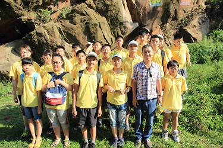
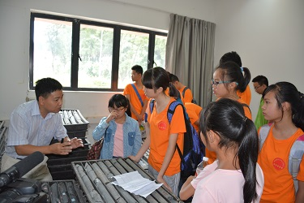
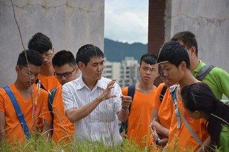
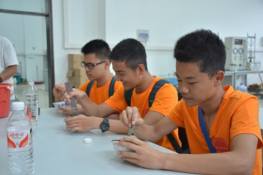

为传承地质精神，探索地质奥秘，贵州大学资源与环境工程学院研究生每年举办“地质精神代代传”夏令营活动，自2014年起，到2015年已成功举办两届。

2014年8月4日到5日，第一期“地质精神代代传—走进地质，畅游古生物世界”科普夏令营活动在贵阳花溪顺利开展。本次活动共有21名中学生、18名研究生、2名带队老师参加，活动采取由1名研究生带2~3名中学生组成，在喻羑艺老师的指导下进行。活动从开营到参观青岩奇石馆再到野外考察、采集化石，让同学们认识到各种各样的古生物化石，同时发扬了老一辈地质学家“特别能吃苦，特别能忍耐，特别能战斗，特别能奉献”的贵州地质精神。借此机会让饱受学习压力的中学生朋友们融入大自然，开拓视野，激发对大自然和科学的兴趣、热爱，向他们宣扬尊重自然、崇尚科学的理念。同时让研究生也走出校园，走向社会，在工作担当感、责任感上有进一步的认识；带头做好吃苦耐劳，将“地质精神”代代传扬。

2014年8月4日到5日，第一期“地质精神代代传—走进地质，畅游古生物世界”科普夏令营活动在贵阳花溪顺利开展。本次活动共有21名中学生、18名研究生、2名带队老师参加，活动采取由1名研究生带2~3名中学生组成，在喻羑艺老师的指导下进行。活动从开营到参观青岩奇石馆再到野外考察、采集化石，让同学们认识到各种各样的古生物化石，同时发扬了老一辈地质学家“特别能吃苦，特别能忍耐，特别能战斗，特别能奉献”的贵州地质精神。借此机会让饱受学习压力的中学生朋友们融入大自然，开拓视野，激发对大自然和科学的兴趣、热爱，向他们宣扬尊重自然、崇尚科学的理念。同时让研究生也走出校园，走向社会，在工作担当感、责任感上有进一步的认识；带头做好吃苦耐劳，将“地质精神”代代传扬。
2015年我们继续传递地质精神。本次地质精神代代传活动分为两部分，第一部分为“走进实验室，探索科学奥秘”，第二部分为“走进Karst世界，探索FAST奥秘”。同样是由研究生带中学生、老师讲解的形式进行。

第一部分在我们资源与环境工程学院举行，旨在让中学生对科学实验有一定的了解，不再像以前仅仅局限在外在的认识上，并且在了解的过程中，让他们领略到大自然的奥秘，认识到自身知识的局限，激发大家认真学习的斗志，增强大家对探索科学的兴趣。实验室参观环节从岩芯库开始，在蒋文杰老师生动的讲解下，同学们了解到岩心的采集方法、储存方法、用途和岩心的描述方法；其次是古生物陈列室，彭进老师主要讲解了寒武纪生物大爆发时期的典型生物种类；为紧接着由历年来致力于矿山生态修复的吴永贵老师向我们展示各种植物在煤矸石、粉煤灰等矿山废弃物中的生长情况。同时还参观了环境仪器实验室，千奇百怪的矿物、岩石手标本；最后我们在岩石实验室和土工实验室亲自动手，制备标准的岩石试样和测量红粘土液塑限的某一部分。
 第二部分是参观位于贵州省黔南州平塘县的射电望远镜基地。此次活动由我们学院陈筠老师、左双英老师、蒋文杰老师作现场指导，并很荣幸地邀请到国家天文台李奇生老师做报告，由朱伯勤老师在射电望远镜基地进行讲解。朱老师讲到，射电望远镜主要是接收天体射电波段辐射的望远镜。射电望远镜的外形差别很大，有固定在地面的单一口径的球面射电望远镜，有能够全方位转动的类似微型接收天线的射电望远镜，有射电望远镜阵列，还有金属杆制成的射电望远镜。天文望远镜的极限分辨率取决于望远镜的口径和观测多用个波长。口径越大，波长越短，分辨率越高。从二十世纪三十年代至今，全世界已经建成很多大型的射电望远镜。我们所看到的射电望远镜是世界上在建的最大的射电望远镜，以前我们国家观看太空都要依赖别的国家，现在我们有自己射电望远镜了，就意味着我们拥有了充分的自主权了，老师的讲解深深的激发了同学们的民族自豪感。
夏令营旅程愉快而短暂，在这个过程中，我们不仅体会到团结协作的精神，也学到了严谨对待一切的地质精神，让大家受益匪浅，也真正理解了‘纸上得来终觉浅，绝知此事须躬行’的学习精神。正如“地质精神代代传”的口号一样，我们资源与环境工程学院研究生每年都会开展暑期夏令营实践活动，将地质精神发扬光大。